INFO
Het festival neemt plaats op 10 en 11 juli 2015. Het festival opent op 10 juli om 11u en sluit om 4u, daarna heb je met een bandje toegang tot de camping. Het festival is te bereiken met de auto, fiets en bus. Ook is er in de buurt een trein station vanwaar er shuttle bussen zullen worden ingelegd. Er wordt ook voldoende parking voorzien voor de wagens en fietsen.
 Op de camping zelf bevinden zich verschillende toiletten en douches die gratis te gebruiken zijn. Ook zijn er campingshops die 24/7 open zijn, je kan er terecht voor: drank, eten, sigaretten etc.
Eet en drink mogelijkheden zijn er genoeg op het festival, aan elk podium is er een bar en enkele eetkraampjes. ook is er een speciale eetzone op de weide met eten van over heel de wereld.
De parking van het festival terein bevind zich vooraan. Er is staanplaats voor 1500 wagens, de parking is gratis en steeds te bereiken via de uitgang. Je kan het festival of camping wel enkel terug binnen bij vertoon van je festival bandje